⚙ 伺服器核心設定｜農夫也能變王者
| 遊戲版本 | 3.81 經典平衡版 |
| 經驗倍率 | 20 倍 （等級提升超有感） |
| 金幣掉寶 | 3 倍 （物寶豐沛好起家） |
| 武防強化 | 1 倍 （裝備價值絕對保值） |
| 智能內掛 | 24H 全自動 （上班睡覺都在強） |
| 伺服器特色 | GM 親自研發核心，拒絕複製貼上 |
| 玩家社群 | https://reurl.cc/gn9Z94 |
| 官方客服 | LINE：@263nnjlu |
🚫 我們堅持的純淨原則
營造最公平的競爭環境
不參與門爭，只體議、做更新
裝備全靠打，技術與時間才是關鍵！
為「耐玩」而誕生，邀你來當亞丁的主人
🎁 新手入坑限定福利
✦ 立即領取「全套基本安定裝」✦
現在加入，即可領取「全套基本安定裝」！
讓您過多無負擔，開局直接進入戰鬥狀態，無痛開農！
最新公告
| 類型 | 公告標題 | 日期 | 閱讀 |
|---|---|---|---|
| NEW | 【福利】新手入坑立即領「全套基本安定裝」！ | 2025/12/20 | 4,521 |
| HOT | 【特色】GM 親自研發核心上線，全新遊戲體驗！ | 2025/12/18 | 3,288 |
| 活動 | 【公告】3.81 經典平衡版正式開服！歡迎加入！ | 2025/12/15 | 6,102 |
| 公告 | 【規範】無濫員、GM 不干預遊戲聲明公告 | 2025/12/10 | 2,877 |
| 活動 | 【攻城戰】本週攻城戰結果公告 | 2025/12/06 | 5,330 |
官方七大職業
君主
血盟核心，以魅力召喚盟員。可學低階魔法，後期以魅力或力量為主。
騎士
最強防禦職業，持劍盾作戰。50級可學衝擊之暈，城戰必備肉盾。
妖精
弓箭遠程輸出，擁有精靈魔法。弓妖賺錢是天堂入門的經典玩法。
法師
最強魔法職業，可學至10階法術。流星雨、起死回生是城戰主力。
黑暗妖精
雙刀近戰，暗閃迴避。城戰最令人聞風喪膽的近戰打手職業。
龍騎士
可變身龍形態，完成普洛凱爾課題成長，後期強力戰鬥職業。
幻術師
奇古獸召喚與鏡像分身。智力幻術後期極具個性與爆發力。
👑 BOSS卡資料庫
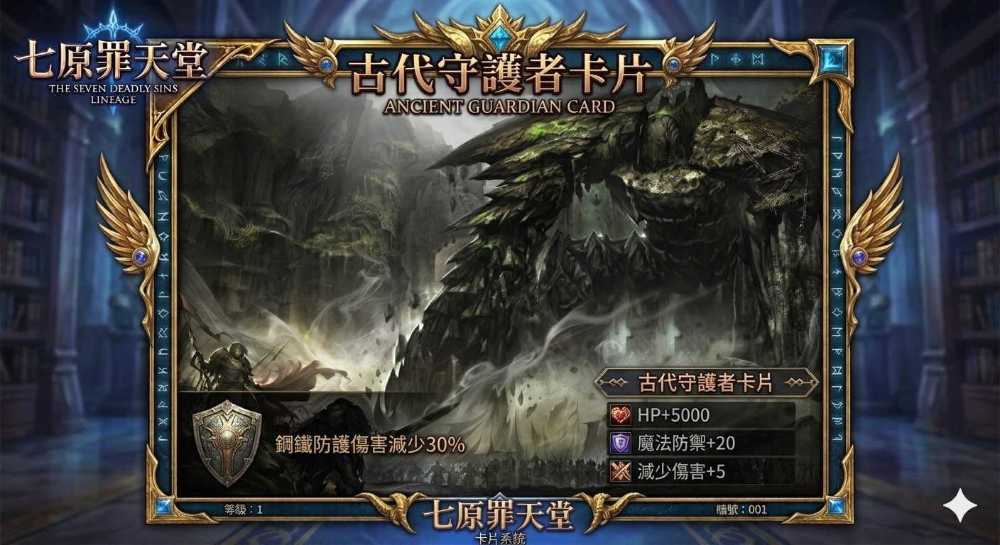
古代守護者
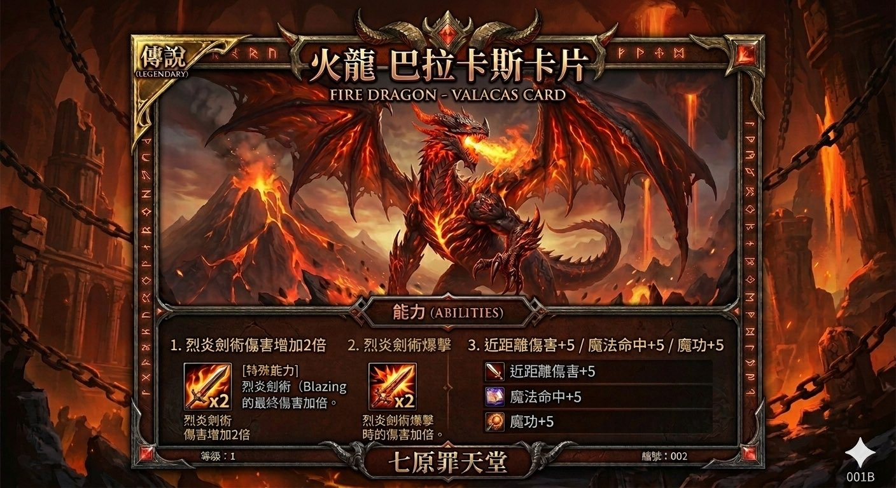
火龍-巴拉卡斯
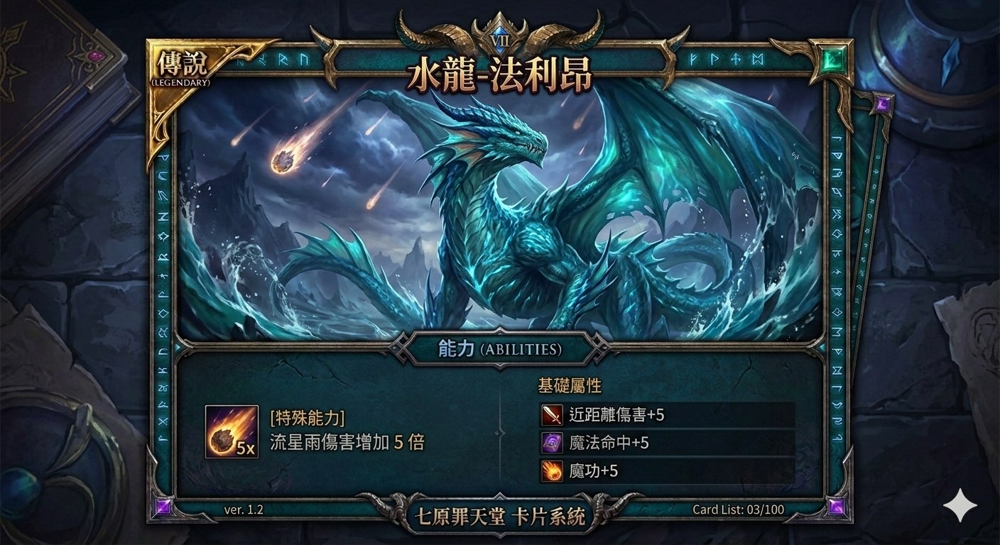
水龍-法利昂
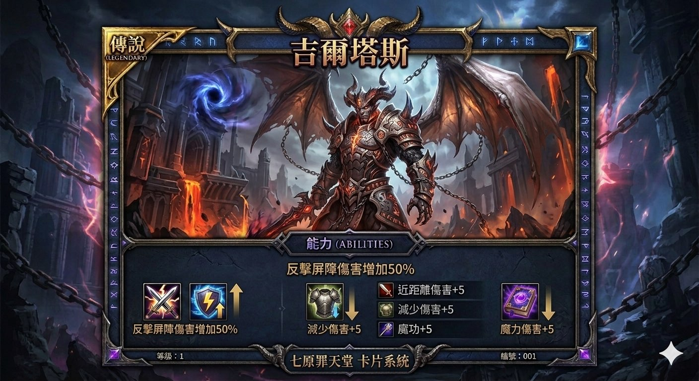
吉爾塔斯
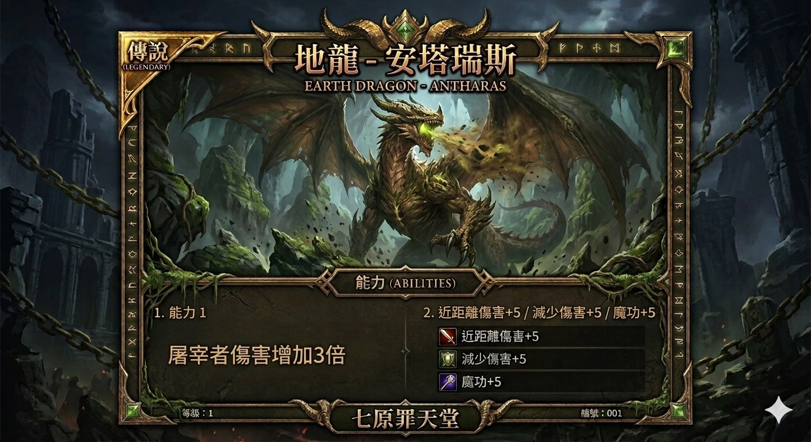
地龍-安塔瑞斯
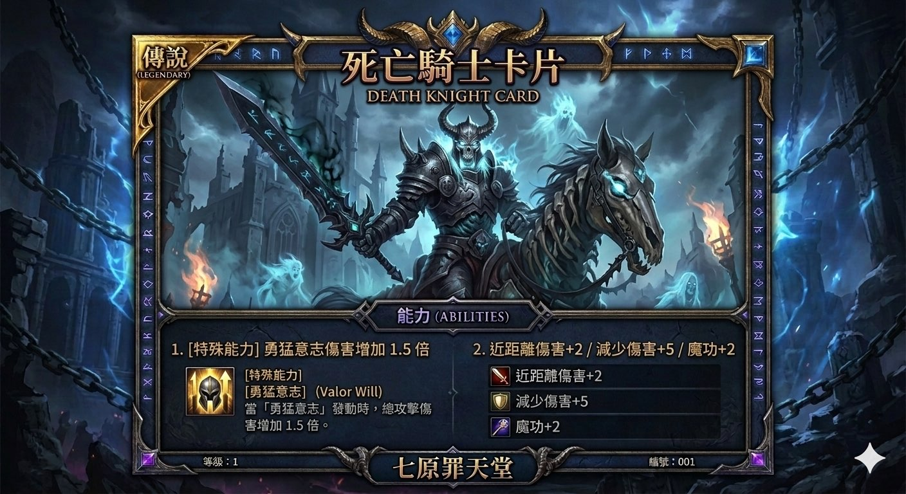
死亡騎士
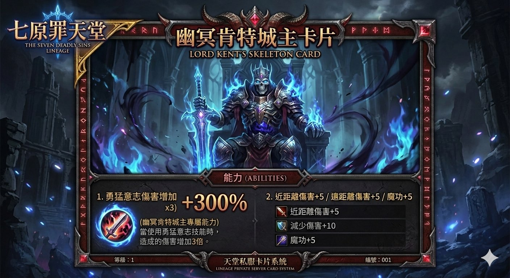
幽冥肯特城主
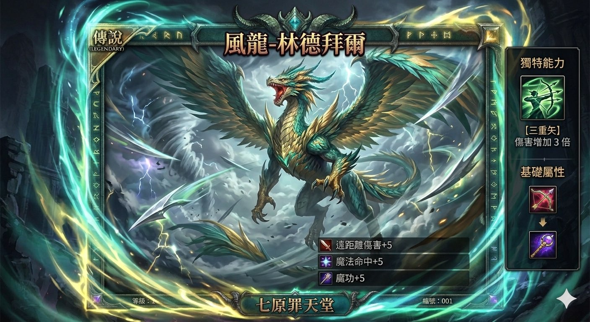
風龍-林德拜爾
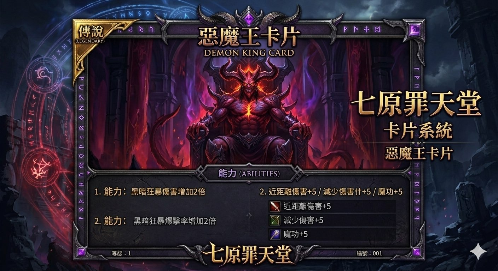
惡魔王
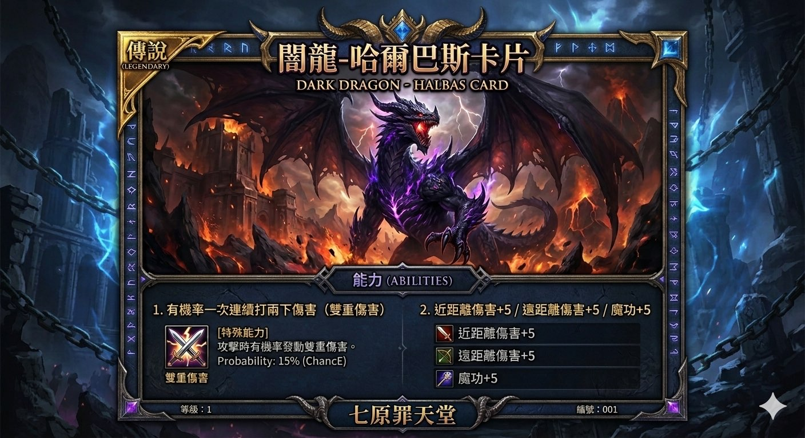
闇龍-哈爾巴斯
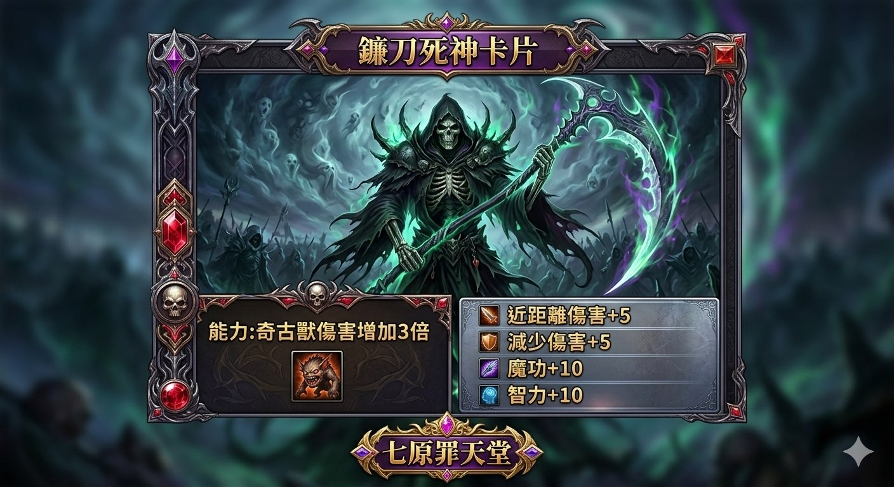
鐮刀死神
裝備資料庫（精選）
攻略指南
| 分類 | 攻略標題 | 日期 | 閱讀 |
|---|---|---|---|
| 新手 | 【新手入門】從角色創建到50級完整教學 | 2025/12/18 | 9,241 |
| 職業 | 【七大職業】詳細配點與技能加點建議 | 2025/12/15 | 7,633 |
| 城戰 | 【攻城戰】完整機制 · 陣型戰術 · 攻守心得 | 2025/12/10 | 6,088 |
| 裝備 | 【傳說裝備】各大神器取得路線與掉落地點 | 2025/12/08 | 5,512 |
| 賺錢 | 【農幣攻略】弓妖路線 · 法師帶狗地圖推薦 | 2025/12/05 | 4,890 |
🗺️ 地圖徽章資料庫
| 徽章名稱 | 碎片數量 | 所需金幣 | 額外攻擊 | 武器命中 | 遠攻 | 遠攻命中 | 魔攻 | 血 | 魔 | 回血 | 回魔 | 物理減傷 |
|---|
📦 材料收集資料庫
🗾 日本地圖系列｜埃裝材料
| 地圖 | 掉落物品 |
|---|---|
| 🗺️ 日本地圖（總覽） | 金幣、火神之槌、薩拉赫之魂、天賦之符碎片 |
| 🏯 北之地 | 金幣、火神痕跡、巡禮者之魂、天賦之符碎片 |
| 🏯 西之地 | 金幣、火焰的勳章、納格巴斯之魂、武炫色石、防具炫色石 |
| 🏯 東之地 | 金幣、火神契約、格拉迪翁之魂、武炫色石、防具炫色石 |
| 🏯 城郭 | 金幣、火神的結晶、杜佩里恩之魂、武炫色石、防具炫色石 |
🗺️ 其他地圖掉落
| 地圖 | 掉落物品 |
|---|---|
| 🏝️ 遺忘之島 | 變身卡箱、古代的卷軸 |
| 🏝️ 新遺忘之島 | 裝備保護卷（25%）、祝武、防卷 |
| 🏰 舊傲慢之塔 | 傲幣、娃娃卡箱 |
| 🏰 新傲慢之塔 1–9F | 淨化的魔法書 |
| 🏰 新傲慢之塔 10F | 反擊屏障、烈焰之魂、究極光裂術、流星雨、精準射擊封印書 |
| 🌿 神力隱谷 | 祝、紅武、防卷；金裝各式憑證、常暗之棺碎片（九尾妖狐）、天賦之符碎片 |
| ✨ 夢幻之島 | 力量、敏捷、體質、智慧、精神、魅力萬能藥 |
| 👹 惡魔王領地 | 武、防具炫色石、無慾、純潔、沉默、真實、信仰碎片（龍武材料） |
🟦 青變材料｜新古魯丁地監
| 地監樓層 | 掉落物品 |
|---|---|
| 🏚️ 1樓 | 靈魂幣、冷冽的氣息、英雄傳記 |
| 🏚️ 2樓 | 靈魂幣、冷冽的氣息、英雄傳記 |
| 🏚️ 3樓 | 靈魂幣、閃耀的鱗片 |
| 🏚️ 4樓 | 靈魂幣、閃耀的鱗片 |
| 🏚️ 5樓 | 靈魂幣、光之加護 |
| 🏚️ 6樓 | 靈魂幣、光之加護 |
| 👑 7樓（頂層） | 靈魂幣、月靈之魂 |
📖 新手指導教學
🌱 新手指引
進入遊戲後，角色背包會有 2把武器，名稱為戰神XXX（依角色名稱有所不同），皆為 +9武器，可直接使用。
人物身上會有七原罪新手禮包、經驗項鍊、經驗腰帶、抗魔法脛甲、亞斯克雷之靴，打開禮包後會有各式防具以及飾品，新手衝等前三天，記得使用經驗項鍊及腰帶。
開啟禮包後依照職業，選擇所需搭配之內衣、手套、鞋子等防具，其中斗篷有四種，四種選一個喜歡的屬性裝備，項鍊及戒指先挑選想使用的，後續做裝備時再挑選即可。
裝備穿戴後即可開始練功，新手練功進度可參閱新手教學，沒有一定可自行摸索。
⚙️ 內掛（自動練功說明）
開啟角色包包，裡頭共有 5項 可以設定，以下僅介紹幾個較為重要的資訊：
點開後請先點選是否自動偵測，點選後右邊關閉會顯示開啟。所有的品項皆需完成第一步驟才能使用，開啟後點選品項右邊的OK，點選OK後右邊的關閉會顯示開啟，在點選左邊的數字0，人物對話欄會顯示所需購買數量，直接輸入數字在對話欄上後送出即可完成設定，每個數量最高上限為1000。
與購買藥水相同，一樣先點選自動魔法攻擊，點選後右邊關閉會顯示開啟。可點選魔力大於幾%時施放，共有單體技能與範圍技能，要有學會才會顯示在上面。
共有定點巡視及順移模式，順移模式共有三個選項，指定傳送、順移卷軸、不使用，必須先點選才會依照所設定的方式去練功，秒數開關下方的開關記得點選。
此功能最重要的設定為下方遇到BOSS是否順移，如需使用，一樣先點選開關在點選下方的順移，點好後兩個的右邊會顯示開啟以及順移。
💰 重要道具介紹（幣種）
📜 各類製作祕笈介紹
目前遊戲中各有8種祕笈，可用於做武器、防具或是武器及防具升階時使用，以下為取得方式及用途。
只有藍布及紅布可由打怪取得，紫布及金布皆需使用傲幣購買。藍布製作的裝備統稱藍裝、藍武，紅布製作為紅裝、紅武，其餘以此類推。
🛡️ 裝備說明
武器依照製作流程順序為 戰神(藍武) → 火神(紅武) → 惡魔(紫武) → 頁・英雄(金武) → 龍武。皆是找主城下方的總管商人製作，其中XX武器稀有憑證，皆是由+9武器點選總管下方融合系統去兌換。
由新手裝備的+7抗盔開始做起，搭配紅布及奧幣，將頭盔升級為魔法頭盔後，再由奧幣商人購買魔法頭盔強化卷軸進行強化，強化至猙狂頭盔後可免疫中毒。
流程：+7抗盔 + 紅布 + 300奧幣 >> 魔法頭盔（使用強化卷）>> 猙狂頭盔
由新手禮包開啟 +10絕對冥魂T恤 系列已是紅防，由奧幣商人購買紫布搭配奧幣將T恤製作成紫T。
流程：+10絕對冥魂T恤 + 紫布 + 600奧幣 >> +9滅龍魔法T恤
於舊遺忘打古卷及封印的盔甲系列後，找主城上方NPC遺忘島迪泰特解除封印，再去奇岩主城找下方滅魔系列NPC，將新手一開始拿到的+7抗鍊製作成滅魔系列盔甲，此盔甲安定0。
流程：古卷 + 封印盔甲 >> 古老盔甲 >> +7抗鍊 + 古老盔甲 >> 滅魔系列盔甲
由新手禮包開啟黑帝斯斗篷系列已是紅防，由奧幣商人購買黑帝斯斗篷強化卷，將斗篷強化至9階後再購買紫布，將斗篷升級為魔化的 黑帝斯斗篷。
流程：黑帝斯斗篷 + 紫布 + 600奧幣 >> 魔化的 黑帝斯斗篷
由新手禮包開啟臂甲系列已是紅防，由奧幣商人購買狂戰臂甲強化卷軸，將臂甲強化至9階後，再去奧塔商人購買紫布，將臂甲升階為光龍臂甲，完成後可再買一張金布，將臂甲升級為半套金裝。
流程：屬性臂甲 >> 9階 >> + 紫布 + 600奧幣 >> 光龍臂甲 >> + 金布 + 600奧幣 >> 光龍覺醒臂甲（半金裝）
由新手禮包開啟楚王護手系列已是紅防，需新遺忘所打到的裝備保護卷，配合祝防卷，點至+7楚王護手後，再購買紫布將手套升階為遠古霸王手套。
流程：+7楚王護手 + 紫布 + 600奧幣 >> 遠古霸王手套
由新手禮包開啟亞斯克雷之靴系列已是紅防，由奧幣商人購買亞斯克雷的強化卷，將鞋子強化至9階亞斯克雷之靴。
由新手裝備的+4抗魔法脛甲開始，初期祝防稀少，可先將其餘裝備升界後，再去打保護卷及祝防將抗魔法脛甲點至+7後，再到主城英雄工匠NPC製作屬性脛甲，製作好屬性脛甲後一樣使用保護卷及祝防將屬性脛甲點至+7，並搭配紅布將屬性脛甲升級為死亡騎士脛甲，再購買死亡騎士脛甲強化卷將脛甲點至9階死亡騎士脛甲，9階後再購買紫布將9階死亡騎士脛甲升為9階極死亡騎士脛甲。需注意一點由於抗魔法脛甲目前無法製作，所以創角時所送的脛甲需好好保存，如果不小心點爆，需重新創角領取。
流程：+7抗魔法脛甲 + 紅布(盾牌) + 天幣5W >> 屬性脛甲 >> +7屬性脛甲 + 紅布 >> 死亡騎士脛甲 >> 9階死亡騎士脛甲 + 紫布 + 600奧幣 >> 9階極 死亡騎士脛甲
💍 飾品說明
由新手禮包開啟殷海薩腰帶系列，搭配藍布將腰帶升階為光之殷海薩腰帶，再去奧幣商人購買光之殷海薩強化卷軸，將腰帶升階至5階後，再購買紫布將腰帶升階為狂龍腰帶。
流程：殷海薩腰帶 + 藍布 >> 光之殷海薩腰帶 >> 5階光之殷海薩腰帶 + 紫布 + 600奧幣 >> 狂龍腰帶
由新手禮包開啟屬性永恆項鍊系列，由奧幣商人購買永恆項鍊強化卷軸，將項鍊升階為9階永恆項鍊，升階完成後搭配紅布將9階永恆項鍊升階為守護之鍊，再購買紫布將守護之鍊升階為真·守護之鍊。
流程：9階永恆項鍊 + 紅布 + 300奧幣 >> 守護之鍊 >> + 紫布 + 600奧幣 >> 真·守護之鍊
由新手禮包開啟共有4種屬性耳環（藍、黑、紫、紅），耳環可戴兩種，需達一定等級才可開啟耳環第二欄位。藍耳製作防耳、紫耳製作智耳、黑耳製作力耳、紅耳製作敏耳。皆由奧幣商人購買麥斯特耳環強化卷將耳環點至8階後，再購買紅布將耳環升階為星星耳環。
流程：8階屬性耳環 + 紅布 + 300奧幣 >> 星星耳環
由新手禮包開啟共有4種屬性戒指（集中、抗魔、體力、魔力），戒指可配戴四類，一開始可戴2類，之後戒指欄位一樣需達一定等級後才能開啟。皆由奧幣商人購買永恆戒指強化卷將戒指點至9階後，搭配紅布將戒指升階為豐天戒指，升皆完成後再購買紫布將戒指升階為元祖。豐天戒指。
流程：9階戒指 + 紅布 + 300奧幣 >> 豐天戒指 >> + 紫布 + 600奧幣 >> 元祖。豐天戒指
⚠️ 裝備、飾品製作都需大量奧幣，開起手需要多點耐心農奧幣。以上武器、防具、飾品完成後，可以開始蒐集金裝憑證，將防具、飾品升皆為金裝，奧幣商人所販售的強化卷，升級金裝時每一件都各需要500張強化卷，所以如果在升階時有剩得切記勿丟棄。
💪 角色能力加強途徑
🚀 新手攻略（更新版）
此版角色有自創金技，角色間還算是平衡，可以自由選擇想玩職業，法師初期會較辛苦，建議還是要有分身來養。
電腦如果夠力，推薦3分身帶1主力，推薦妖精農資源（奧幣、娃娃箱、變身卡箱），創角後穿上包包武器及裝備，武器GM已設定為+9武器，其餘部分防具已更改為紅裝起手。
出生點於話島，裝備配戴完成後，包包有提供天堂變身卷(紅)點開後可以兌換，找自己喜歡的變身即可，近戰就選取近戰，弓手就選取弓手變身，可增加大量血魔。變身完成後，可再話島練到話島碎片集滿50個，50個後飛回主城找右上方，地圖勳章NPC製作徽章，接下來找傳師>>拉斯塔八德地區>>飛三樓存些武防卷，賣給商人後，擁有一些水錢就可以轉戰奧塔，妖精三重、法師聖界等50集禮包會贈送，也可以大群問看好心的群友，願不願意提供，此外妖精的三重矢需要40等後才能使用內掛施放。
妖精起手建議學水屬性，此版生祝有大幅提升補血量，法師全智也有，妖精學會生祝後就可以開始農奧幣，一開始先將飾品點去紅裝或紫裝（飾品有加攻擊跟減傷），再將其他防具升階至9階，防具推薦先將頭盔點至猙狂頭盔，再將其他裝備點至紅或紫，期間打到的娃娃箱子可以開啟並吃掉合成。
裝備差不多成型後，可以將部分角色拉去舊遺忘之塔打變身卡箱，其餘角色去新遺忘打防爆卷，將身上裝備需要防具卷的裝備點上去，通常都是3之角色集體餵1之角色，等農到莊變身卡及娃娃卡都至少將紫以下都吃，以及裝備升滿需要金裝憑證後，就可以考慮開始掛支配塔或是神力地圖打金裝憑證。
神力地圖由於不能自動，所以金裝憑證掉落率比支配塔高很多，非常適合手動玩家。
出話島 >> 拉3賺錢 >> 改掛奧塔存奧幣提升裝備、累積娃娃卡 >> 舊遺忘打變身卡箱 >> 新遺忘打保護卷 >> 水之領域打紋樣寶箱 >> 開始農金裝憑證 >> 金裝農好 >> 改掛惡魔王圖鑑蒐集武、防炫色石點裝備
角色衡等：必買推廣1階藥水及藍鑽二階藥水，紅紫裝新遺忘，金裝後手動神力或惡魔王圖，或使用起始回生去新古丁2樓爆不死系，所有職業都適合。
⚠️ 由於此版本武器為魔法武器，所以有吃智力加成，智力部分建議點滿。
如還有問題，歡迎大群詢問。— 清楓
🛡️ 道具資料庫
🌀 特殊裝備
力量/敏捷/體質/精神/智力/魅力 +3
體力上限 +1000 ／ 魔力上限 +1000 ／ 魔力回復量 20 ／ 魔攻 +3
狩獵經驗值 +100 ／ 藥水回復量 +10%
力量/敏捷/體質/精神/智力/魅力 +3
體力上限 +1000 ／ 魔力上限 +1000 ／ 魔力回復量 20 ／ 魔攻 +3
狩獵經驗值 +100 ／ 藥水回復量 +20%
魔武發動率+10 ／ 魔武增傷害+20
PVP傷害減免 +10 ／ PVP傷害增加 +10
⬆️ 符石升階系列
色慾之魅惑符石 → 進階 → 暴食飢渴符石
力量/敏捷/體質/精神/智力/魅力 +2
體力上限 +500 ／ 魔力上限 +500 ／ 魔攻 +2
狩獵經驗值 +100 ／ 藥水回復量 +5%
力量/敏捷/體質/精神/智力/魅力 +4
體力上限 +1000 ／ 魔力上限 +1000 ／ 魔攻 +4
狩獵經驗值 +100 ／ 藥水回復量 +10%
力量/敏捷/體質/精神/智力/魅力 +2
體力上限 +500 ／ 魔力上限 +500
狩獵經驗值 +100 ／ 藥水回復量 +5%
力量/敏捷/體質/精神/智力/魅力 +4
體力上限 +1000 ／ 魔力上限 +1000 ／ 魔攻 +4
狩獵經驗值 +100 ／ 藥水回復量 +10%
⬆️ 肩甲升階系列
左右肩甲各自獨立升階，最終形態為滅世魔神肩胛。
全系列無法強化 ／ 材質：寶石
體力上限 +400 ／ 魔力上限 +400 ／ 魔攻 +3
狩獵經驗值 +50（左右相同）／ 無法交易
體力上限 +800 ／ 魔力上限 +800 ／ 魔攻 +6
狩獵經驗值：左 +100 ／ 右 -106%
體力上限 +1600 ／ 魔力上限 +1600 ／ 魔攻 +6
狩獵經驗值：左 +150 ／ 右 -106%
🎨 炫色資料庫
⚔️ 武器炫彩石能力值一覽表
| 項次 | 顏色 | 武器類別 | 最小攻擊 | 最大攻擊 | 命中 | 鎧外攻擊 | 力量 | 魅力 | 敏捷 | 智力 | 精神 | 血量 | 魔攻 | 最小吸魔 | 最大吸魔 | 吸魔機率 | 魔法傷害 | 物理格擋 | 魔法格擋 | PVP增傷 | PVP減傷 |
|---|
🛡️ 防具炫彩石能力值一覽表
| 項目 | 顏色 | 部位 | 鎧外攻擊 | 血量 | 魔力 | 魅力 | 魔攻 | 魔防 | 魔法格擋 | PVP增傷 | PVP減傷 | 藥水回復 |
|---|
⭐ 加成資料庫｜各職業轉生能力加成表
👑 王族、騎士
| 轉數 | 額外血量 | 額外魔力 | 力量 | 全傷害減免 |
|---|
🏹 妖精
| 轉數 | 額外血量 | 額外魔力 | 力量 | 敏捷 | 遠距離命中、傷害 |
|---|
🔮 法師、幻術師
| 轉數 | 額外血量 | 額外魔力 | 智力 | 魔攻 | 魔法傷害 |
|---|
🌑 黑妖、龍騎士
| 轉數 | 額外血量 | 額外魔力 | 力量 | 近距離命中、傷害 |
|---|
⚔️ 血盟升級加成能力
| 血盟等級 | 力／敏／智 | 近遠傷 | 魔功 | 物魔減傷 | 血量 |
|---|
🛡️ 裝備過安定加成能力
| 項次 | 安定 | 物理減傷 | 魔法減傷 | 血量 | 魔力 |
|---|
⚔️ 武器資料庫
🌑 魔族隱藏武器
| 武器名稱 | 小怪 | 大怪 | 屬性加成 |
|---|---|---|---|
| 魔族之劍 | 12 | 12 | 命中+3 ／ HP+30 |
| 魔族弓箭 | 2 | 2 | 命中+3 ／ 攻擊+6 |
| 魔族魔杖 | 15 | 16 | 命中+4 ／ 回魔+3 ／ 魔攻+1 |
| 魔族鋼爪 | 24 | 26 | 命中+3 |
| 魔族鎖鏈劍 | 25 | 28 | 命中+8 ／ 攻擊+1 |
| 魔族奇古獸 | 28 | 28 | 命中+3 ／ 回魔+1 ／ 魔攻+1 |
🔵 稀有武器
| 武器名稱 | 小怪 | 大怪 | 屬性加成 |
|---|---|---|---|
| 戰神馬爾斯小刀 | 17 | 17 | 命中+4 ／ 攻擊+4 ／ 力量+1 |
| 戰神馬爾斯神弓 | 4 | 4 | 命中+4 ／ 攻擊+7 ／ 敏捷+1 |
| 戰神馬爾斯雙手劍 | 20 | 24 | 命中+6 ／ 攻擊+6 ／ 力量+1 |
| 戰神馬爾斯雙刀 | 19 | 18 | 命中+2 ／ 攻擊+4 ／ 力量+1 |
| 戰神馬爾斯法杖 | 10 | 10 | 攻擊+3 ／ 智力+1 ／ 回魔+5 ／ 魔攻+1 |
| 戰神馬爾斯奇古獸 | 22 | 25 | 智力+1 ／ 魔攻+2 |
| 戰神馬爾斯鎖鏈劍 | 26 | 26 | 命中+6 ／ 攻擊+5 ／ 力量+1 |
🔴 英雄武器
| 武器名稱 | 小怪 | 大怪 | 屬性加成 |
|---|---|---|---|
| 火神赫發斯特斯雙刀 | 23 | 20 | 攻擊+3 ／ 力量+3 ／ 體質+1 ／ 智力+1 |
| 火神赫發斯特斯鎖鏈劍 | 30 | 30 | 攻擊+6 ／ 力量+3 ／ 體質+1 ／ 智力+1 |
| 火神赫發斯特斯奇古獸 | 26 | 31 | 智力+2 ／ 精神+1 ／ 魔攻+7 ／ 魔防+1 |
| 火神赫發斯特斯短劍 | 22 | 22 | 攻擊+4 ／ 力量+3 ／ 體質+1 ／ 智力+1 |
| 火神赫發斯特斯雙手劍 | 24 | 26 | 攻擊+6 ／ 力量+5 ／ 體質+1 ／ 智力+1 |
| 火神赫發斯特斯法杖 | 12 | 12 | 攻擊+4 ／ 力量+3 ／ 智力+3 ／ 精神+1 ／ 魔攻+7 ／ 魔防+1 |
| 火神赫發斯特斯神弓 | 7 | 7 | 攻擊+3 ／ 敏捷+4 ／ 智力+2 ／ 精神+2 |
| 火神赫發斯特斯巨斧 | 27 | 30 | 命中+1 ／ 攻擊+5 ／ 力量+7 ／ 體質+2 |
🟣 傳說武器
| 武器名稱 | 小怪 | 大怪 | 屬性加成 |
|---|---|---|---|
| 惡魔王鎖鏈劍 | 34 | 34 | 命中+1 ／ 攻擊+3 ／ 力量+5 ／ 體質+2 ／ 智力+2 |
| 惡魔王奇古獸 | 29 | 34 | 命中+1 ／ 攻擊+3 ／ 智力+4 ／ 精神+1 ／ 魔攻+7 |
| 惡魔王矛 | 25 | 25 | 命中+2 ／ 攻擊+3 |
| 惡魔王雙刀 | 27 | 24 | 命中+5 ／ 攻擊+3 ／ 力量+5 ／ 敏捷+1 ／ 智力+1 |
| 惡魔王雙手劍 | 26 | 28 | 命中+1 ／ 攻擊+5 ／ 力量+5 ／ 體質+2 |
| 惡魔王魔杖 | 14 | 14 | 命中+6 ／ 攻擊+2 ／ 智力+5 ／ 精神+3 ／ 回魔+100 ／ 魔攻+7 |
| 惡魔王弓 | 10 | 10 | 命中+4 ／ 攻擊+6 ／ 敏捷+7 ／ 智力+3 ／ 精神+3 |
| 惡魔王小刀 | 27 | 27 | 命中+3 ／ 攻擊+14 ／ 力量+6 ／ 敏捷+2 ／ 智力+2 |
🟡 神話武器
| 武器名稱 | 小怪 | 大怪 | 屬性加成 |
|---|---|---|---|
| 真。英雄之雙手劍 | 28 | 30 | 命中+4 ／ 攻擊+20 ／ 力量+6 ／ 體質+3 ／ 智力+3 |
| 真。英雄之弓 | 12 | 12 | 命中+8 ／ 攻擊+24 ／ 敏捷+9 ／ 智力+3 ／ 精神+3 ／ 魔攻+3 |
| 真。英雄之魔杖 | 16 | 16 | 命中+1 ／ 攻擊+3 ／ 智力+6 ／ 精神+3 ／ 回魔+100 ／ 魔攻+10 |
| 真。英雄短劍 | 20 | 10 | 命中+3 ／ 攻擊+14 ／ HP+100 |
| 真。英雄單手劍 | 32 | 30 | 命中+7 ／ 攻擊+15 ／ 力量+6 ／ 敏捷+3 ／ 智力+3 |
| 真。英雄雙刀 | 31 | 27 | 命中+8 ／ 攻擊+19 ／ 力量+6 ／ 敏捷+1 ／ 智力+1 |
| 真。英雄鎖鏈劍 | 36 | 36 | 命中+10 ／ 攻擊+20 ／ 力量+6 ／ 體質+3 ／ 智力+3 |
| 真。英雄奇古獸 | 33 | 36 | 攻擊+15 ／ 智力+6 ／ 精神+2 ／ 回魔+15 ／ 魔攻+10 |
🔥 龍武
| 武器名稱 | 小怪 | 大怪 | 屬性加成 |
|---|---|---|---|
| 大地女神的激怒（弓箭系列） | 15 | 15 | 攻擊+28 ／ 敏捷+12 ／ 智力+5 ／ 精神+5 ／ 魔攻+5 |
| 克洛諾斯的恐怖（鎖鏈劍系列） | 40 | 40 | 命中+10 ／ 攻擊+25 ／ 力量+10 ／ 體質+5 ／ 智力+5 |
| 海柏利昂的絕望（奇古獸系列） | 36 | 40 | 攻擊+20 ／ 智力+10 ／ 精神+5 ／ 魔攻+15 ／ 魔防+3 |
| 真．冥皇執行劍（雙手劍系列） | 35 | 39 | 攻擊+12 ／ 力量+21 ／ 體質+5 ／ 智力+3 |
| 紅影雙刀（雙刀系列） | 34 | 31 | 攻擊+24 ／ 力量+10 ／ 敏捷+2 ／ 智力+2 |
| 屠龍劍（單手劍系列） | 36 | 38 | 攻擊+20 ／ 力量+10 ／ 敏捷+6 ／ 智力+6 |
| 傑羅斯的魔杖（魔杖系列） | 4 | 4 | 命中+5 ／ 攻擊+3 ／ 精神+1 ／ 魔攻+5 |
⚡ 金技資料庫
👑 王族金技
範圍暈眩最多 6個目標
命中：等級高60% ／ 相同50% ／ 低40%
效果：所有傷害均無效
冷卻時間：15秒
暴擊機率：+50%
暴擊傷害：×2.5倍
單次攻擊吸血：+500
🏹 妖精金技
額外增加 1.5倍傷害
限定：刀妖使用
每次攻擊額外火焰傷害
×1.5～2.5倍（不等）
🔮 法師金技
命中率：50% ／ 冷卻：15秒
全體傷害減免：+6 ／ PVP 傷害減免：+6
🌑 黑暗妖精金技
效果：瞬移貼近目標，造成 2秒暈眩 + 傷害
爆擊機率：+10% ／ 爆擊倍率：+10%
傷害吸血：10%
🐉 龍騎士金技
HP 低於 30% 時，吸血量 翻倍
拉至前1格，綁腳 4秒
疊加 三層弱點曝光
冷卻：12秒
⚔️ 騎士金技
傷害：120魔法+武器傷害
暈眩：2~4秒
命中：高70% ／ 同50% ／ 低40%
最大HP轉傷：10%
暴擊機率：+20%
暴擊傷害：×1.5倍
承受傷害：×1.3
暴擊機率：+10%
暴擊傷害：×1.1倍
✨ 幻術師金技
連結兩名敵人，其中一名所受傷害的
50% 反彈至另一名敵人
傷害提升：+25%
暴擊機率：+20%
暴擊傷害：×1.5倍
承受傷害：+10%